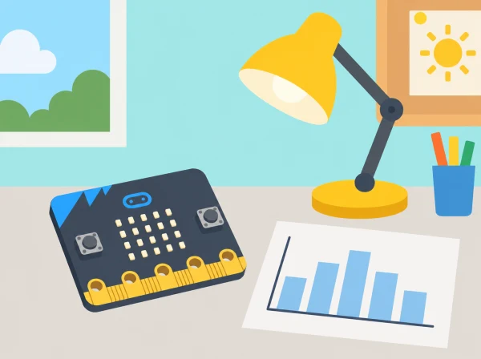

La llum que usem
🏷️ Energia i dades del centre
🌱 Situació, repte i intenció
🎯 Aprenentatges i vocabulari
- Planificar una recollida de dades de llum amb lloc, hora i condicions comparables.
- Calibrar i repetir lectures, representar-les i distingir valors observats de dades fictícies.
- Argumentar una proposta d’ús de la il·luminació basada en el conjunt de dades disponible.
- Explicar que el sensor de micro:bit no certifica lux, eficiència energètica ni confort visual.
🧰 Materials i preparació
BBC micro:bit amb sensor de llum disponible en la versió del centre, cable o alimentació adequada, ordinador amb MakeCode o Python, cronòmetre i full de registre. Si la placa és v1 o no exposa les lectures requerides a l’entorn instal·lat, useu un sensor extern verificat per separat o feu una simulació amb dades de prova identificades com a simulades.
📅 Seqüència didàctica
Energia al nostre voltant (Energy around us)
Fase 1 · Activem i prediem
Obriu la conversa amb una ronda d’exemples: on s’utilitza llum elèctrica al centre i quines fonts de llum natural hi ha? Connecteu l’observació amb l’acció climàtica (Objectiu Global 13) i pregunteu què voldríem saber abans de proposar un canvi.
Fase 2 · Explorem i construïm
En un plànol senzill, marqueu espais possibles —aula buida amb permís, biblioteca en un moment acordat o una maqueta d’aula— i els punts on es podria col·locar la micro:bit sense molestar. Trieu una ubicació autoritzada i definiu una pregunta investigable, per exemple com varia la lectura en un punt fix entre llum natural i llum de la maqueta.
Fase 3 · Expliquem i registrem
Acordeu què voldrà dir «lectura baixa» i «lectura alta» només dins d’aquesta prova, i quines condicions anotareu. Separeu la mesura ambiental de la idea de consum: el sensor observa la llum que li arriba, no l’electricitat utilitzada.
Fase 4 · Apliquem i millorem
Reviseu la pregunta amb una altra parella: pot respondre’s amb lectures de llum?, necessita registrar persones o horaris?, es pot fer sense tocar interruptors? Simplifiqueu la recerca si depén d’una dada que el sensor no pot mesurar.
Fase 5 · Comprovem i reflexionem
Planificar les dades (Energy data planning)
Fase 1 · Activem i prediem
Recupereu la pregunta i predigueu quines variables poden fer canviar la lectura encara que la llum no varie: posició, orientació, ombra, hora o llum natural. Trieu quina condició canviareu i quines mantindreu constants.
Fase 2 · Explorem i construïm
Planifiqueu ubicació, orientació de la placa, interval, durada, moments amb llum natural i una situació de referència. Feu una fitxa de camp amb codi de lloc no identificador, condició, lectura i incidències; excloeu noms, presència i horaris personals.
Fase 3 · Expliquem i registrem
Programeu micro:bit perquè mostre o registre valors del sensor de llum, segons el model i l’entorn de programació disponibles. Practiqueu una lectura i anoteu com s’interpreta l’escala de la placa; no l’etiqueteu com a lux si no és una mesura calibrada.
Fase 4 · Apliquem i millorem
Repetiu lectures en condicions conegudes, per exemple en la mateixa posició amb la llum de la maqueta apagada i encesa. Compareu-les i ajuste el protocol si l’orientació o la base canvien entre intents. Anoteu les limitacions del model de placa.
Fase 5 · Comprovem i reflexionem
Recollir i calibrar (Energy data collecting)
Fase 1 · Activem i prediem
Abans d’eixir al punt autoritzat, reviseu el pla de mostreig i predigueu què podria alterar la línia de base (núvol, ombra, porta oberta o canvi de posició). Assigneu rols de preparació, lectura, registre i comprovació, i acordeu quan s’atura la recollida.
Fase 2 · Explorem i construïm
Calibreu el registre amb diverses lectures consecutives en el mateix punt i poseu en marxa la micro:bit com a temporitzador o registrador segons el programa. Recolliu dades en intervals curts acordats; el prototip queda supervisat i no obstaculitza l’activitat del centre.
Fase 3 · Expliquem i registrem
Compareu la línia de base amb una prova controlada de llum de maqueta encesa i apagada. Per cada lectura, anoteu condició, orientació i incidències; marqueu canvis de llum natural i repeticions sense gravar ni registrar presència, horaris personals o noms.
Fase 4 · Apliquem i millorem
Reviseu si la base s’ha mogut o si una ombra inesperada afecta una tanda. Repetiu només la comparació afectada i conserveu les lectures originals amb una nota d’incidència, en lloc de substituir-les silenciosament.
Fase 5 · Comprovem i reflexionem
Processar i interpretar (Energy data processing)
Fase 1 · Activem i prediem
Mireu les lectures i prediu quin patró podríeu veure entre la línia de base i les proves controlades. Abans de calcular, decidiu quines columnes i condicions necessiteu per respondre la pregunta sense exposar dades personals.
Fase 2 · Explorem i construïm
Passeu les lectures a una taula neta, manteniu els codis de lloc no identificadors i calculeu un valor representatiu (mitjana o mediana, segons el nivell) per a cada condició. Conserveu el rang i el nombre de repeticions al costat del resum.
Fase 3 · Expliquem i registrem
Dibuixeu un gràfic amb títol, eixos i escala descrits. Detecteu valors atípics, canvis de posició i moments amb il·luminació externa; no elimineu una lectura sense deixar constància del motiu. Distingiu observació («la lectura va pujar») d’interpretació («hi havia més llum natural»).
Fase 4 · Apliquem i millorem
Escriviu una inferència prudent i, al costat, una explicació alternativa abans de recomanar cap canvi. Si les dades no permeten distingir llum natural de llum elèctrica, proposeu una nova mesura controlada en lloc d’afirmar una causa.
Fase 5 · Comprovem i reflexionem
Estimar energia i cost (Energy use calculations)
Fase 1 · Activem i prediem
Separeu la lectura del sensor de llum de la dada de potència: la micro:bit no mesura kWh. Predigueu quines dades calen per calcular energia i cost (potència, temps d’ús i tarifa) i identifiqueu quines són fictícies o autoritzades pel centre.
Fase 2 · Explorem i construïm
Trieu la potència nominal documentada d’una lluminària fictícia o facilitada pel centre i un temps estimat d’ús. Convertiu watts a quilowatts i apliqueu energia (kWh) = potència (kW) × temps (h); després multipliqueu per una tarifa d’exemple explicitada pel docent.
Fase 3 · Expliquem i registrem
Reproduïu el càlcul de l’exemple: lluminària hipotètica de 40 W = 0,04 kW; ús durant 3 hores = 0,12 kWh; amb 0,30 €/kWh, cost il·lustratiu de 0,036 €. Anoteu les unitats en cada pas i distingiu el càlcul de les dades de llum recollides.
Fase 4 · Apliquem i millorem
Compareu l’estimació d’un dia amb una setmana de cinc dies i reviseu els decimals. Completeu una llista del que faltaria per estimar millor un cas real: nombre de lluminàries, potència efectiva, hores d’ús, tarifa aplicable i altres consums. No useu factures ni tarifes familiars.
Fase 5 · Comprovem i reflexionem
Presentar una proposta (Energy presentations)
Fase 1 · Activem i prediem
Definiu l’audiència escolar acordada —classe, comissió ambiental o equip directiu— i predigueu quina informació necessitarà per valorar la proposta. Seleccioneu una recomanació de baix cost que no requerisca manipular la instal·lació.
Fase 2 · Explorem i construïm
Prepareu un pòster o exposició breu amb cinc peces: pregunta, mètode, gràfic, estimació fictícia separada de les lectures i proposta de prova. Afegiu les condicions de mesura, repeticions i possibles errors perquè el públic puga valorar la fiabilitat.
Fase 3 · Expliquem i registrem
Presenteu les dades i expliqueu què s’ha observat, quina inferència és prudent i quina estimació econòmica és només un exemple. Indiqueu què caldria mesurar millor per comprovar l’efecte d’una acció.
Fase 4 · Apliquem i millorem
Una altra parella revisa si cada afirmació se sosté en una dada, si les limitacions són visibles i si la proposta podria provar-se amb autorització. Reviseu el material amb el retorn i traieu qualsevol conclusió que excedisca les lectures.
Fase 5 · Comprovem i reflexionem
Guió de treball de camp i registre
Sessions 1–2: feu un mapa senzill dels espais possibles i trieu-ne un que el centre autoritze. Acordeu la pregunta abans d'obrir MakeCode: per exemple, «com canvia la lectura del sensor en un punt fix quan hi ha llum natural o quan encenem la llum de la maqueta?». Definiu què mantindreu constant —posició i orientació de la placa— i quina condició canvia. Creeu un programa que mostre una lectura actual o la guarde a intervals adequats a l'eina.
Proveu primer amb la placa en el mateix lloc i compareu lectures repetides; anoteu que la lectura és un valor relatiu del sensor i que no és una mesura professional d'il·luminació.
Sessions 3–4: recolliu les dades en períodes curts i supervisats. Cada fila inclou codi de lloc no identificador, hora aproximada, condició de llum, orientació, valor i incidències com ara un núvol o una ombra. No anoteu noms, presència, ús d'espais per grups ni horaris personals. Després, calculeu la mitjana o la mediana segons el nivell, marqueu rang i possibles lectures anòmales i feu un gràfic amb eixos i unitats descrits.
Separeu observació («la lectura va pujar») d'interpretació («hi havia més llum natural») i d'hipòtesi («potser no calia encendre el llum»).
Estimació d'energia: exemple amb dades fictícies
La lectura del sensor no es transforma en kWh. Per practicar el càlcul de la lliçó oficial, useu una lluminària fictícia o una potència nominal autoritzada pel centre. Convertiu watts a quilowatts i multipliqueu per les hores d'ús: energia (kWh) = potència (kW) × temps (h). Per exemple, una lluminària hipotètica de 40 W és 0,04 kW; si s'utilitza 3 hores, el càlcul dona 0,12 kWh. Amb una tarifa d'exemple de 0,30 €/kWh, el cost il·lustratiu és 0,036 €.
Indiqueu en el full que potència, temps i tarifa són valors de pràctica i que no representen la factura del centre.
Compareu una estimació per un dia i per una setmana de cinc dies i reviseu les unitats. Pregunteu què falta per fer una estimació millor: nombre de lluminàries, potència real, hores d'ús, tarifa aplicable i altres consums. No multipliqueu directament la lectura ambiental del micro:bit per cap factor de consum.
🧪 Evidències i avaluació
Recolliu pregunta i pla de mesura, programa del registre, taula datada amb unitats i condicions, gràfic, càlcul d’exemple i proposta amb límits explícits. Valoreu qualitat de les repeticions, tractament de dades incertes, càlcul coherent i adequació de la comunicació al públic.
Proposta, revisió i avaluació
En la sessió final, prepareu una presentació amb cinc peces: pregunta, mètode, gràfic, estimació fictícia separada de les lectures i proposta de prova. La recomanació pot ser tan modesta com «repetir la lectura en dos dies més» o «comprovar si hi ha llum natural abans d'encendre», i ha d'indicar qui podria autoritzar una prova real. Una altra parella revisa si cada afirmació es recolza en una dada i si les limitacions són visibles.
La graella d'avaluació observa: planifica variables i repeticions; representa la dada amb unitats o escala explicades; diferencia lectura, inferència i càlcul; usa correctament kWh i euros en l'exemple; comunica una proposta prudent. Accepteu pòster, presentació oral, gràfic digital o maqueta anotada. No valoreu l'estalvi real aconseguit perquè aquesta activitat no mesura el comptador elèctric.
♿ Participació, accessibilitat i seguretat
Demaneu autorització abans de mesurar dins del centre i no registreu dades personals ni presència. No toqueu interruptors o instal·lacions, no tapeu eixides ni bloquegeu passadissos. La lectura de llum varia amb l’orientació, les ombres i la llum natural; una correlació no demostra per si sola quanta energia s’ha consumit ni qui n’és responsable.
🔗 Referents i adaptació
Aquesta situació cobreix les sis lliçons de micro:bit Energy awareness: Energy around us, Energy data planning, Energy data collecting, Energy data processing, Energy use calculations i Energy presentations. La recerca al centre, les dades d’exemple, la proposta i la imatge són propis; la seqüència manté els objectius de planificar, calibrar, recollir, analitzar, calcular i comunicar.